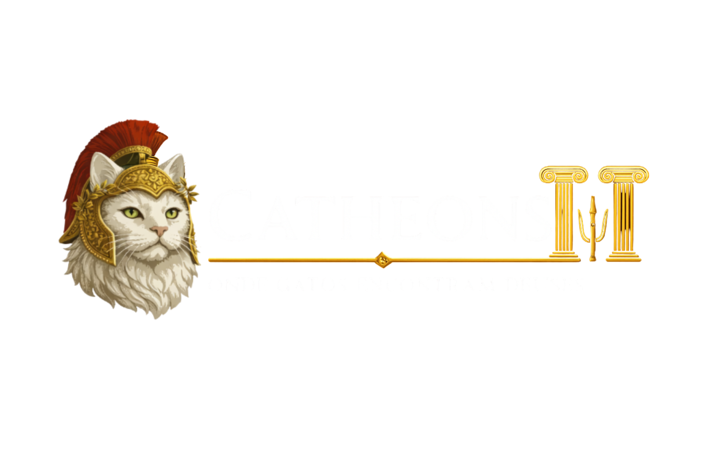

Catheons — Banquetes dignos do Olimpo felino
Um restaurante temático onde mitologia grega, elegância e personalidade felina se encontram em pratos e drinks autorais.
"Cada prato representa uma divindade felina. Cada ambiente mistura sofisticação clássica, humor criativo e atmosfera mitológica."